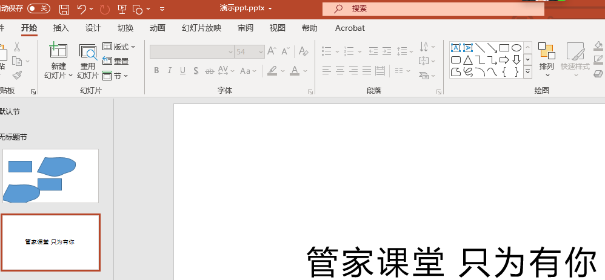
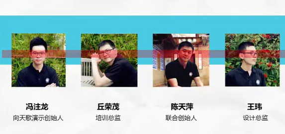
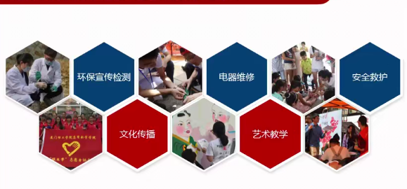
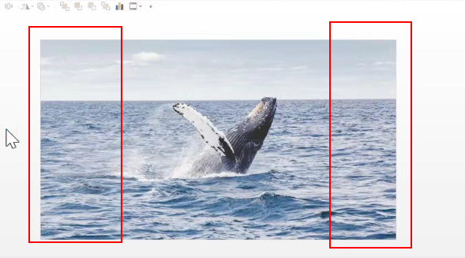
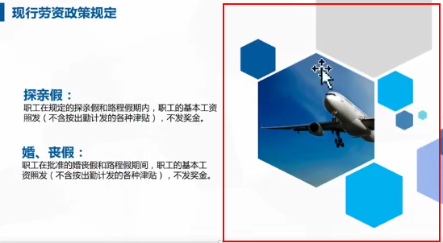
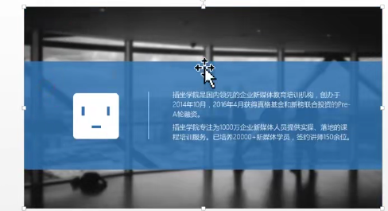
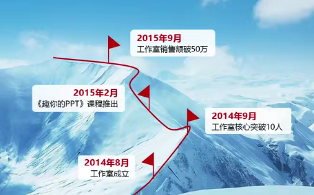
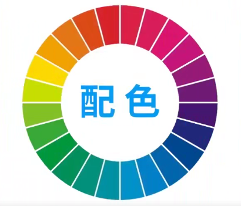
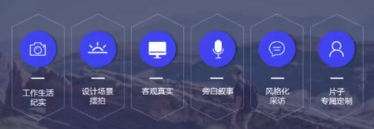

必学功能
字体
1、识别太难看不懂
2、爱用特效土又怂
3、缺失字体心绞痛
微软雅黑 宋体纤细
尽量使用微软雅黑字体。是万能的选择
微软雅黑light也是非常棒的字体。
011文字的基本设置

字体安装：
汉仪小麦体 下载 右键安装
求字体qiuziti.com分析字体叫什么名字。
012 气质的营造 其实字体是很美的
方正超粗黑简体
细的字体，在表现细节上质感。
康熙字体 ，华康海报体
书法字体具有设计感和表现力
字体选择因素:
1、气质和使用和场景
推荐几款：
中国风：禹卫书法行书简体 叶根友行书简体 造字工房力黑
文鼎霹雳体 汉仪小麦体 华康俪金黑
思源宋体
房门正道标题体
微软雅黑
①字体混搭法
②素材修饰法
③大小对比法
特殊字体的保存方法：
工具 保存选项 嵌入字体
将字体变为图片
形状 布尔运算
013 好图片的定义与寻找

四个错误：
①图片变形
②水印图片
③模糊不清
④图文不符
三大原则：
高清无码气质
符合主题
高清无码
符合气质
一、百度图片 辅助功能（类似图片 高清图片)
pixabay.com免费图片搜索
pexels.com
刻印用引文试试
sc.chinaz.com
www.bieyang.info
好的图片随手保存。做好分类。
百度识图
014快速蜕变 解锁用好图片的各种姿势
如何使用小图，拼装法；
通过布尔做出形状
贴边
裁剪
2、如何使用大图
留白多的，把字放在留白区域

眼睛在同一条直线。
1、纯色填充法（图片背景纯色)
2、图片修饰法：

手机电脑素材，精品图标。
3、蒙版法
格调提升，案例提升法
关于图片的基本操作
图片效果。模糊功能
删除背景，双击删除背景（背景颜色比较存的)
压缩图片 双击 压缩图片
超级妙招，图片无缝拉伸

复制图片裁剪，拉伸红色区域。


015形状让你的PPT千变万化

线条 形状的作用：
①导航仪原则
②三八线原则
③点睛原则
利用线条进行升级
编辑顶点
渐变设置（右键 设置形状格式）渐变光照
uigradients.com渐变网站
蒙版
配色尽量从图片中选色。
016 配色 你也能是PPT定制级大师
配色认知：
一、颜色杂乱
二、饱和度太高
三、脱离具体使用情景
1、颜色要看得见
2、颜色要少
想到黄色的建设帽

好的配色：公司VI系统配色，结合了公司的企业文化。
行业有行业的配色。医疗 党政 科技等
colorhunt.co
materialpalette.com配色网站
花瓣网搜索配色
017 图标 小图标让你嗖嗖大变化
①吻合主题
②图标要统一
图标有没有框啊，线性图标

第三个和第四个不是线性图标，整体有点差
③图标透明底
阿里巴巴矢量图标库
iconfont.com搜索下载等
Ai软件加工图标
018巩固与实操作 看到好设计如何为我所用
没有准备
技巧小复盘
花瓣网